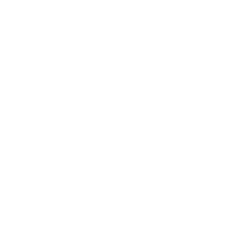

Security Maturity Assessment
A structured assessment of an organization's security maturity, identifying capability gaps, supporting evidence and prioritized improvement opportunities.

Independent Cybersecurity & Information Security Consulting
Security maturity, risk and governance — assessed through evidence and context.
A structured assessment of an organization's security maturity, identifying capability gaps, supporting evidence and prioritized improvement opportunities.
Root is the independent consulting practice of André Ataíde.